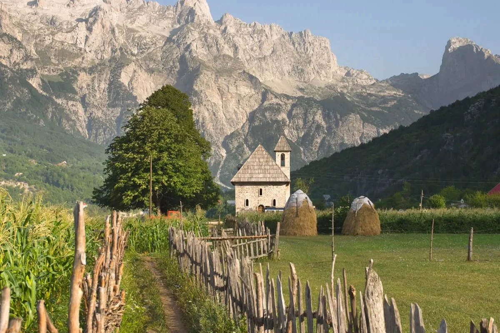
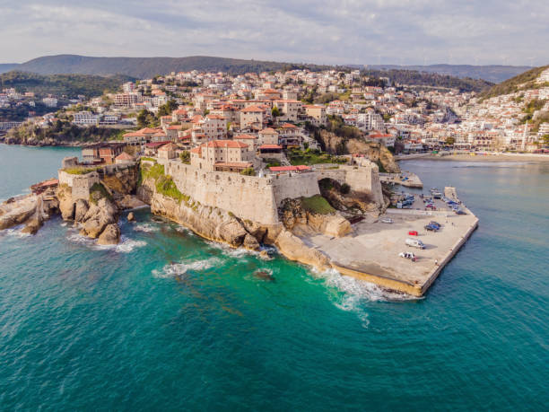
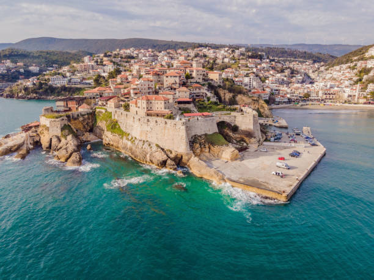

Veshjet Tradicionale Shqiptare: Veshjet e Burrave



 


Shqipëria Veriore
Përfshin veshjet e vendeve të: Dukagjinit, Mirditës, Lezhës, Dibrës
Shqipëria e Mesme
Përfshin veshjet e vendeve të: Tiranës, Elbasanit, Durrësit
Shqipëria Jugore
Përfshin veshjet e vendeve të: Beratit, Gjirokastrës, Korçës
Kosova
Përfshin veshjet e vendeve të: Prizrenit, Rugovës, Hasit, Drenicës
Mali i Zi
Përfshin veshjet e vendit të Ulqinit
Maqedonia e Veriut
Përfshin veshjet e vendeve të: Tetovës, Strugës